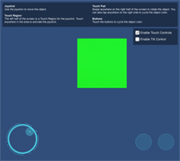

Examples
All examples can be found in the Rewired/Examples folder. You should use these examples to learn how to work with the more advanced features of Rewired. More examples will be added in future updates.
- Simple Control Remapping
- Control Remapping 1
- Custom Controllers Touch
- Custom Controllers Tilt
- Eight Players
- Fallback Joystick Identification
- Press Start To Join
- Press Any Button to Join
- Touch Controls 1
- Touch Buttons 1
- Touch Joysticks 1
Simple Control Remapping
(Included for Unity 5.0+)
NOTE: Rewired includes Control Mapper, a complete, configurable, responsive Unity UI-based control remapping system which can be used directly in your games. You can use it instead of writing your own remapping screen.
This is a very basic example of control remapping using the InputMapper class. This example only supports 1 Player, 1 Joystick, 1 Controller Map, and 1 mapping per Action, per controller type. No UI windows are used and conflict checking is handled automatically by InputMapper to keep this example small and focused.
Control Remapping 1
NOTE: Rewired includes Control Mapper, a complete, configurable, responsive Unity UI-based control remapping system which can be used directly in your games. You can use it instead of writing your own remapping screen.
This example demonstrates how to create a controller remapping screen using legacy Unity's GUI system. The demo shows examples of:
- Assigning controllers to players
- Mapping actions to controller, keyboard, and mouse elements
- Conflict checking during element assignment
- Using Map Categories and Action Categories to filter actions shown to user
- Calibrating controller axes
- Saving and loading controller maps, input behaviors, and calibration maps
- Joystick identification for Unity input fallback platforms
The example is not meant to be a finished, drop-in controller remapping screen. (If you're looking for that, use Control Mapper.) Many games may not need such a complex setup, and you'll very likely want to replace Unity's legacy GUI with nGUI, Unity's new UI, or another GUI system. You can use this example to learn how to implement each aspect and customize it for your game's needs.
For a simpler example, see Simple Control Remapping.
Custom Controllers Touch
Note: Rewired now includes Touch Controls which can be used directly in your game. See Touch Controls for more information.
This example shows how to implement Custom Controllers, one possible use of which is on-screen touch controllers. The demo is not meant to be a drop-in touch controller. Use the sample code to learn how to work with Custom Controllers.
Custom Controllers Tilt
Note: Rewired now includes a Tilt Control which can be used directly in your game. See Component Controls - Tilt Control for more information.
This example shows how to handle basic tilt control on a mobile device using a Custom Controller.
Eight Players
This example shows how to create basic joystick controls for 8 players and how to get input.
Fallback Joystick Identification
This example shows how you identify which joystick is which using Unity's input system as the input source on Windows. See Identifying joysticks on Windows fallback or Windows Webplayer platforms for more information.
Press Start To Join
This example shows one possible implementation of a "Press Start to Join" joystick assignment system. This is based on the example shown here under Method 1.
Press Any Button To Join
This example shows one possible implementation of a "Press Any Button to Join" joystick assignment system. This is based on the example shown here under Method 2.
Touch Controls 1
This example shows a working touch controller setup including a Touch Joystick, Touch Button, Touch Pad, Touch Region, and a Tilt Control. See Touch Controls for more information on touch controls and Component Controls - Tilt Control for more information on tilt control.
Example files are located in Rewired/Extras/TouchControls/Examples.
Touch Buttons 1
This example shows various configuration options of Touch Buttons. See Touch Controls for more information on touch controls and Component Controls - Tilt Control for more information on tilt control.
Example files are located in Rewired/Extras/TouchControls/Examples.
Touch Joysticks 1
This example shows various Touch Joysticks. See Touch Controls for more information on touch controls.
Example files are located in Rewired/Extras/TouchControls/Examples.